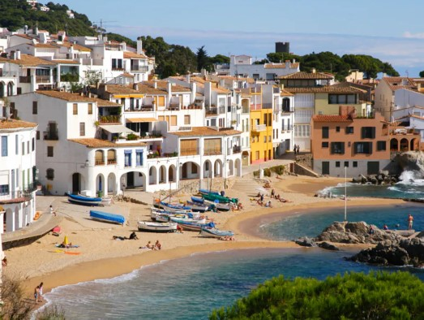
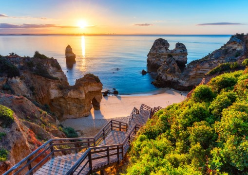

Disfruta de las hermosas playas y calas de la Costa Brava. Realizaremos caminatas por el Camino de Ronda, que ofrece vistas
espectaculares al mar. También habrá excursiones a pueblos medievales como Pals y Peratallada, y paseos suaves por los jardines botánicos de Cap Roig.

Toscana, Italia
Un destino perfecto para explorar la historia y la gastronomía italiana. Te llevaremos a recorrer las colinas y viñedos en una
relajada excursión a pie, además de visitar ciudades como Florencia y Siena para disfrutar de su arte y arquitectura renacentista. También
organizamos talleres de cocina tradicional.
Algarve, Portugal
Relájate en las playas doradas del Algarve y disfruta de paseos en barco por la Ría Formosa, una reserva natural de gran belleza.
Ofrecemos senderismo ligero por los Acantilados de Ponta da Piedade y excursiones a pueblos pesqueros como Tavira y Lagos, donde podrás conocer
la historia y la cultura local.

Selva Negra, Alemania
Ideal para los amantes de la naturaleza, la Selva Negra ofrece rutas de senderismo suaves por sus frondosos bosques y lagos.
Visitaremos el pintoresco pueblo de Triberg y sus famosas cascadas, así como la ciudad de Freiburg, con su encantador casco histórico. También
habrá paseos en tren panorámico para disfrutar del paisaje.
Provenza, Francia
Vive el encanto de la Provenza con paseos por los campos de lavanda y visitas a mercados locales en pueblos como Gordes y Roussillon.
Organizamos excursiones al Parque Natural del Luberon y suaves caminatas entre viñedos y olivos. También habrá una visita al famoso Palacio de los
Papas en Aviñón.